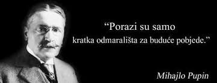

Mihajlo Idvorski Pupin

Mihajlo Idvorski Pupin, Ph.D., LL.D. (Serbian Cyrillic: Михајло Идворски Пупин; 9 October 1858 – 12 March 1935), also known as Michael I. Pupin, was a Serbian American physicist and physical chemist.
Pupin is best known for his numerous patents, including a means of greatly extending the range of long-distance telephone communication by placing loading coils (of wire) at predetermined intervals along the transmitting wire (known as "pupinization").
Pupin was a founding member of National Advisory Committee for Aeronautics (NACA) on March 3, 1915, which later became NASA.